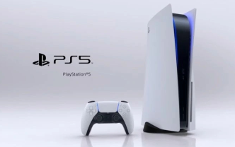
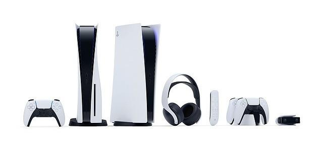

PlayStation 5
PlayStation 5（简称：PS5），指SONY推出的Playstation系列家用式游戏主机的第五代。
2020年11月12日，索尼新主机PS5在北美、日本、澳大利亚等地上市，11月19日登陆其它市场。
2021年2月8日，PlayStation中国宣布国行PS5将于2021年4月到6月期间上市。
发展历程
2019年10月8日，有爆料称索尼宣布PlayStation 5将于2020年底发售，但索尼第一时间否认 。
2020年3月18日，PlayStation 5首席系统架构师Mark Cerny在“The Road to PS5”活动上公布了技术细节。
2020年4月，索尼通过网络发布了部分PS5规格，与微软次世代游戏主机Xbox Series X硬件规格方面有所不同的是，索尼方面对于一些细节没能拿出令玩家满意的答复。
2020年4月7日，索尼公布了名为DualSense的无线手柄。
2020年6月9日，PlayStation确认，索尼PS5线上发布会将在北京时间6月12日凌晨4点举行。
2020年6月12日，索尼召开PS5游戏发布会， [11] 正式公布了 PS5 的外观设计。索尼 PS5 主机采用黑白设计，与手柄配色保持一致，并可垂直站立放置，拥有标准版和数字版两个版本。 [12] 此外，PS纯数字版本、耳机、遥控器、手柄等全套设备也集体亮相。这次发布会，还公布了20多款游戏演示视频，涉及《GTA5》、《生化危机:VILLAGE》等游戏作品。
2020年8月20日，索尼PlayStation中文官网在晚间公布了全新内容：PlayStation 5首支全球广告，广告主题为“未知新世界”，内容主要展示了前不久发布的PS5主机的沉浸式体验，同时还分享了触觉回馈、自适应扳机和Tempest 3D音效技术如何为PS5平台提供崭新游戏体验。
2020年11月12日，索尼新主机PS5在北美、日本、澳大利亚等地上市，11月19日登陆其它市场。
2021年2月8日，PlayStation中国宣布国行PS5将于2021年4月到6月期间上市。